I am a Principal Researcher at the Visual Intelligence Lab, ETRI, South Korea, and since 2025 an Associate Professor of Artificial Intelligence at UST. I am involved in national R&D projects in computer vision and machine learning, with an emphasis on practical, real-world applications such as surveillance-camera systems. My current research interests include evaluating the competency of AI models, improving large-scale foundation models, and applying multimodal models to real-world problems.
I received my B.S. (2010) and integrated M.S./Ph.D. (2017) in Electrical and Computer Engineering from Seoul National University, advised by Prof. Jin Young Choi.
High-performance visual big-data discovery platform for large-scale, real-time video understanding. National R&D Excellence Top 100 (2019, 2021, 2023).
Self-improving, competency-aware learning — out-of-distribution detection, uncertainty, and open-set recognition for reliable vision systems.
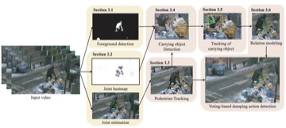
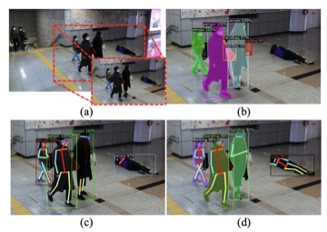
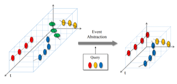
I advise M.S. and Ph.D. students in Artificial Intelligence at UST, and supervise research interns at ETRI working on computer vision for real-world impact. I'm always looking for motivated students interested in vision, OOD / uncertainty, and surveillance AI. Prospective students → email me
Journal Conf. = peer-reviewed journal / conference
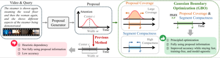
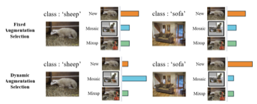
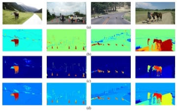
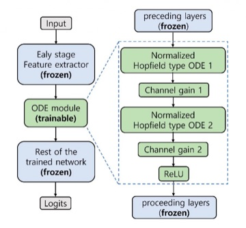
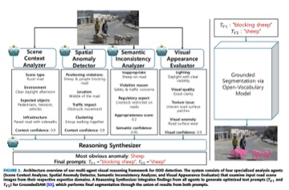
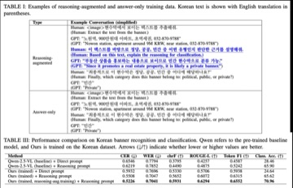
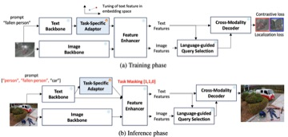
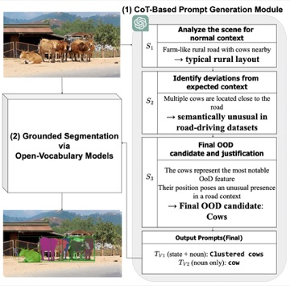
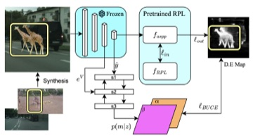
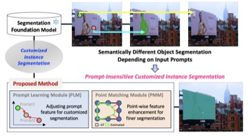
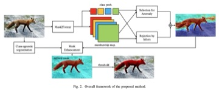
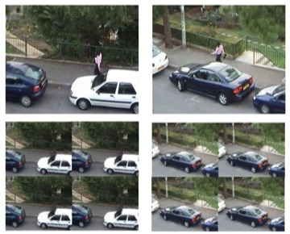
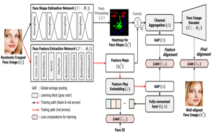
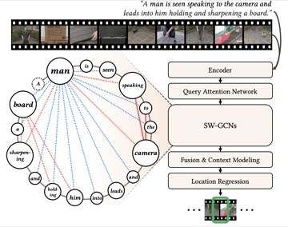
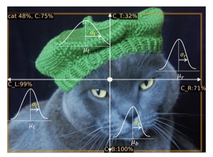
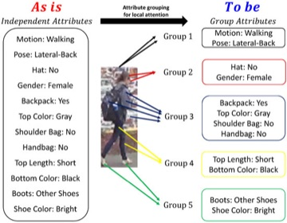
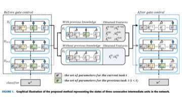
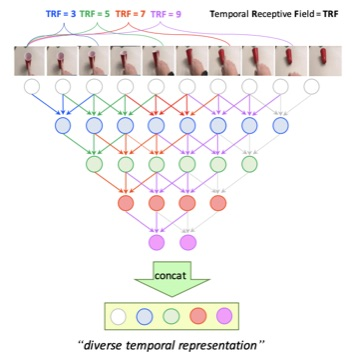
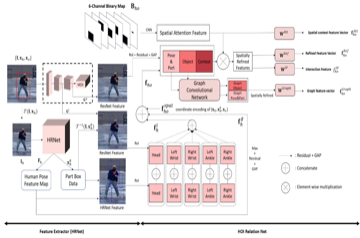
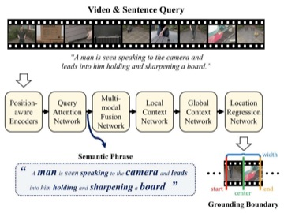
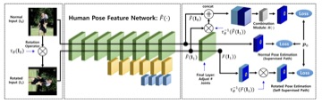
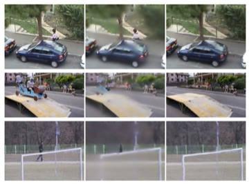
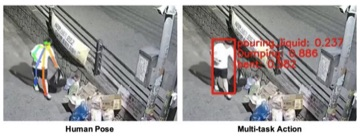
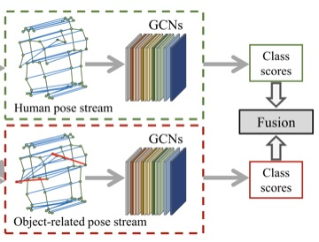
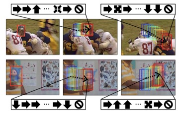
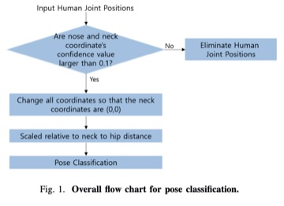
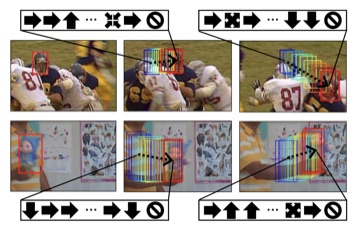
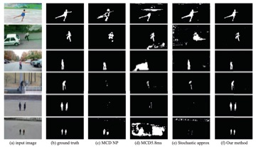
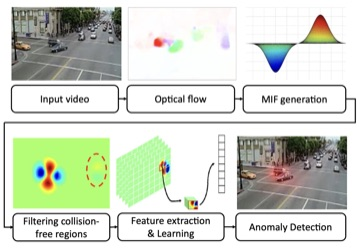
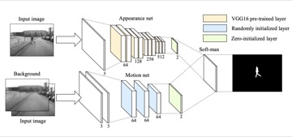
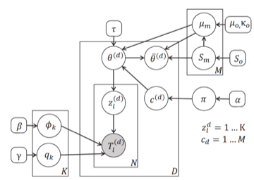
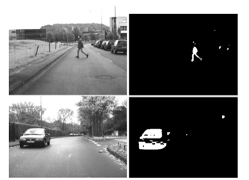
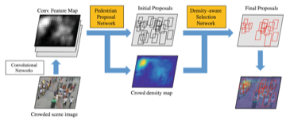
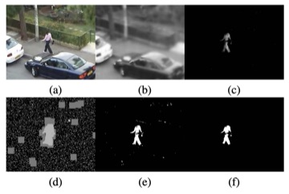
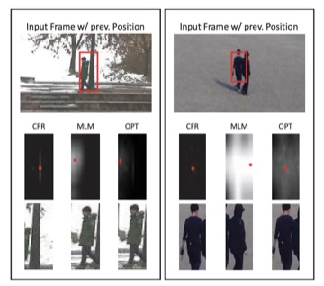
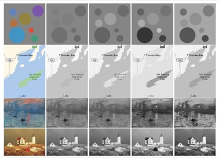
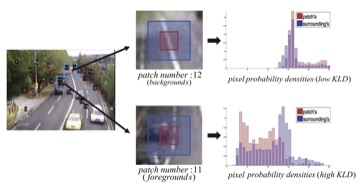
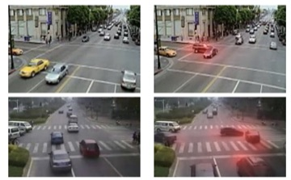
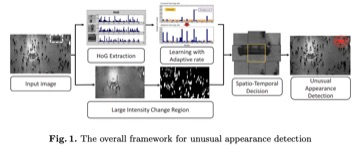
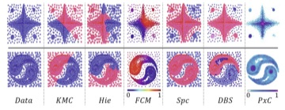
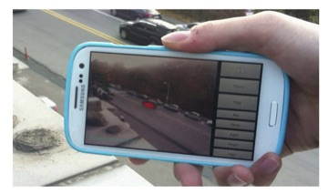
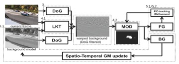
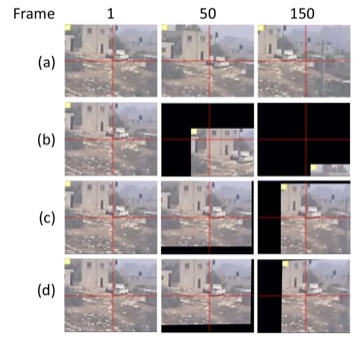
Granted Pending
Korean-language papers, mostly co-authored with research interns.
Conference Reviewer — CVPR, ICCV, NeurIPS, WACV, BMVC
Journal Reviewer — IEEE TPAMI, IEEE TNNLS, IEEE TIP, IEEE TVT, IEEE TMM, IEEE T-ITS, IEEE Access